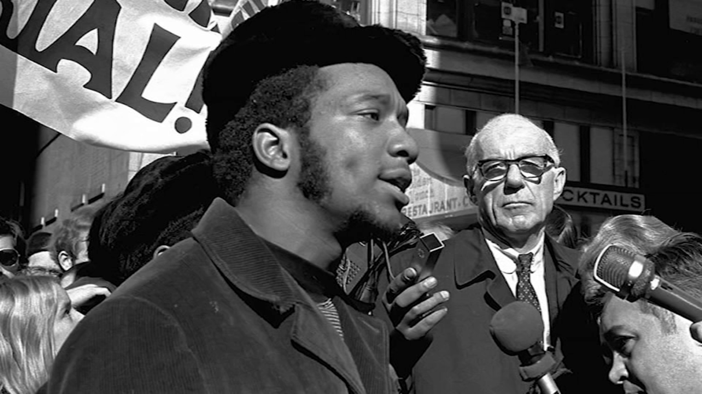
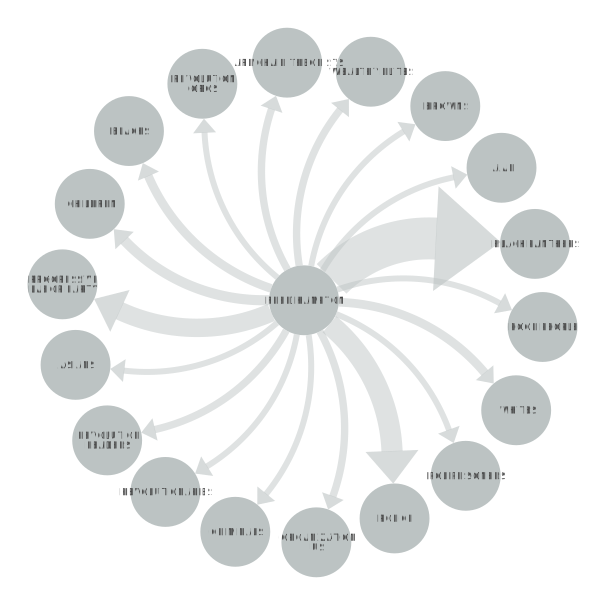

FRED HAMPTON
Fred Hampton was a young, charismatic leader of the Black Panther Party in Chicago during the late 1960s. He was born on August 30, 1948, in Summit, Illinois, and grew up in a working-class family. Hampton became involved in activism at a young age, and joined the Black Panther Party in 1968 at the age of 20. As a leader in the party, Hampton quickly became known for his organizing skills and his ability to inspire others. He worked tirelessly to build alliances with other community organizations and to address the needs of Black people in Chicago's impoverished neighborhoods.
POSITIVE OR NEGATIVE RHETORICAL ACTION
Fred Hampton joined the Black Panthers later in the Civil Rights Movement, in 1968. Hampton’s analyzed speech is one given a year after joining the organization. From the histogram you can see that there are mentions of active resistance, self-defense, and mostly nonviolence. The Black Panthers are well known for their upfront actions and bold statements, so the way Hampton’s speech was broken down isn’t a surprise. Hampton was a powerful orator who would have made more change had he not been assassinated. Although Hampton’s speech has less mentions of self-defense and active resistance than possibly expected, it makes sense after contextualizing the speech. Hampton’s speech was delivered in April of 1969 and he would be assassinated that year in December. Had Hampton lived longer, his words may have changed.
"YOU CAN MURDER A LIBERATOR, BUT YOU CAN'T MURDER LIBERATION"
In "You Can Murder a Liberator, but You Cant Murder Liberation," Fred Hamption spoke passionately about the need for Black liberation and called for solidarity among all oppressed people. His words were a powerful condemnation of the racist and oppressive system that had long held Black people down, and he called on his listeners to rise up against it. He spoke about the need for collective action and unity, and he urged people to recognize their own power to bring about change.
NETWORK GRAPH
 <<<<<<< HEADHampton focused on the actions of the Panthers and criticisms of them by outside groups, most prominently: 1. The police, who, in addition to outright animosity towards self-defensive minorities, also harassed people attending the Breakfast for Children Program on account of its socialist origins; 2. The Progressive Labor Party, another far-left political organization critical of the publicity of the Panthers' actions; and 3. Organization US, a black nationalist group that criticized the Panthers' focus on class struggle (tensions with this group ran high partially due to a smear campaign as part of the FBI COINTELPRO operation). As such, these groups were mentioned more than the rest. =======
Hampton's most frequent mention of a set or org was the Black Panthers, which tracks considering that he was apart of the group itself. The mentions of police are what we can assume as negative because of the negative relationship between the Black Panthers and the police. This negative relationship pops up again with Hampton's mentioning of the Progressive Labor Party, which he was not the most fond of. >>>>>>> b1ff20c0327cdda4097f456c92fa662a3313ad93